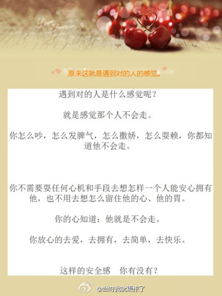

妹夫在Amerian Express工作，说起接他们公司项目的三家公司都陆续被Oracle收购。其中一家正在谈项目价格，收购消息公布后，报价立刻上涨10%.

Ada李力
2012-07-06
Ada李力
2012-07-06
太犀利麻辣了。 //@麻辣情医吴迪:我勒个去，这就是“对的人”？！明白了，原来“对的人” 就是你爸你妈。被如此对待还不会走的，只有你爸你妈了。微博上天天有这种脑残心灵鸡汤。//@呜喵喵melony: 这就是把爱人逼走的最好想法。
//@麻辣情医吴迪:我勒个去，这就是“对的人”？！明白了，原来“对的人” 就是你爸你妈。被如此对待还不会走的，只有你爸你妈了。微博上天天有这种脑残心灵鸡汤。//@呜喵喵melony: 这就是把爱人逼走的最好想法。
@当时我就震惊了:
原来这就是遇到对的人的感觉（图转）
- 
Ada李力
2012-07-06
弟媳开车出小区为超近道逆行，结果堵住了，天培大叫:"别人堵住我们的车啦"。弟媳纠了他。我在旁发挥:"很多人成年后仍旧像孩子，就是出了问题只会怪别人"。天培接上话:"我说错了，是我妈妈堵住别人了"，我又发挥:"很多成年人都不会说'我错了'这几个字"。和孩子在一起的感想颇多哈。